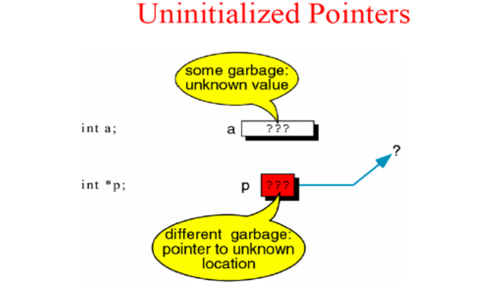
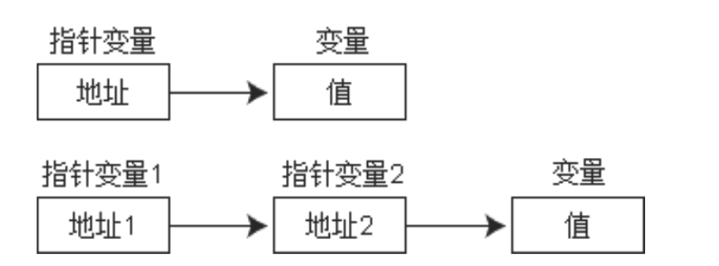
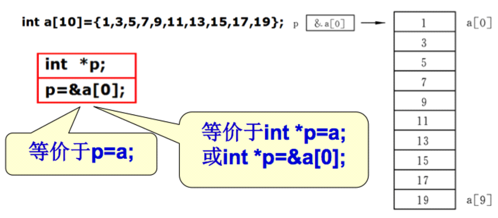

Reference Link: https://blog.csdn.net/weixin_44617968/article/details/117656810?utm_medium=distribute.pc_feed_v2.none-task-blog-hot_rank_bottoming-8.pc_personrecdepth_1-utm_source=distribute.pc_feed_v2.none-task-blog-hot_rank_bottoming-8.pc_personrec
# 定义初始化
C 语言中提供了 * 来定义指针变量和访问指针变量指向的内存存储空间.
- 在定义变量的时候 * 是一个类型说明符，说明定义的这个变量是一个指针变量
- 在不是定义变量的时候 * 是一个操作符，代表访问指针所指向存储空间
C 语言中提供了地址运算符 & 来表示变量的地址。其一般形式为: & 变量名.
int *p=NULL; // 定义指针变量 | |
int a = 5; | |
int *p1 = &a; | |
printf("a = %d", *p1); // 访问指针变量 |
# 野指针
指针没有初始化里面是一个垃圾值，这时候的指针是一个野指针.

- 野指针可能会导致程序崩溃
- 野指针访问你不该访问数据
- 所以指针必须初始化才可以访问其所指向存储区域
# 二级指针
如果一个指针变量存放的又是另一个指针变量的地址，则称这个指针变量为指向指针的指针变量。也称为 “二级指针”.

# 数组指针
只要一个指针变量保存了数组元素的地址，我们就称之为数组元素指针.

printf(“%p %p”, &(a[0]), a); // 输出结果：0x1100, 0x1100 |
注意：数组名 a 不代表整个数组，只代表数组首元素的地址。
“p=a;” 的作用是 “把 a 数组的首元素的地址赋给指针变量 p”, 而不是 “把数组 a 各元素的值赋给 p”
# 访问数组元素
访问数组元素，可用下面两种方法:
- 下标法，如 a [i] 形式
- 指针法，*(p+i) 形式
# 字符串指针
// 数组名保存的是数组第 0 个元素的地址，指针也可以保存第 0 个元素的地址 | |
char *str = "abc" |
# 注意事项
- 可以查看字符串的每一个字符
har *str = "lnj"; | |
for(int i = 0; i < strlen(str);i++) | |
{ | |
printf("%c-", *(str+i)); // 输出结果:l-n-j | |
} |
- 不可以修改字符串内容
// + 使用字符数组来保存的字符串是保存栈里的，保存栈里面东西是可读可写，所有可以修改字符串中的的字符 | |
// + 使用字符指针来保存字符串，它保存的是字符串常量地址，常量区是只读的，所以我们不可以修改字符串中的字符 | |
char *str = "lnj"; | |
*(str+2) = 'y'; // 错误 |
- 不能够直接接收键盘输入
// 错误的原因是:str 是一个野指针，他并没有指向某一块内存空间 | |
// 所以不允许这样写如果给 str 分配内存空间是可以这样用 的 | |
char *str; | |
scanf("%s", str); |
# 函数指针
为什么指针可以指向一个函数？
- 函数作为一段程序，在内存中也要占据部分存储空间，它也有一个起始地址
- 函数有自己的地址，那就好办了，我们的指针变量就是用来存储地址的。
- 因此可以利用一个指针指向一个函数。其中，函数名就代表着函数的地址。
指针函数的定义 - 格式:
返回值类型 (*指针变量名)(形参1, 形参2, ...);
int sum(int a,int b) | |
{ | |
return a + b; | |
} | |
int (*p)(int,int); | |
p = sum; |
# 应用场景
- 调用函数
- 将函数作为参数在函数间传递
# 注意点
- 由于这类指针变量存储的是一个函数的入口地址，所以对它们作加减运算 (比如 p++) 是无意义的.
- 函数调用中
(*指针变量名)的两边的括号不可少，其中的不应该理解为求值运算，在此处它只是一种表示符号.